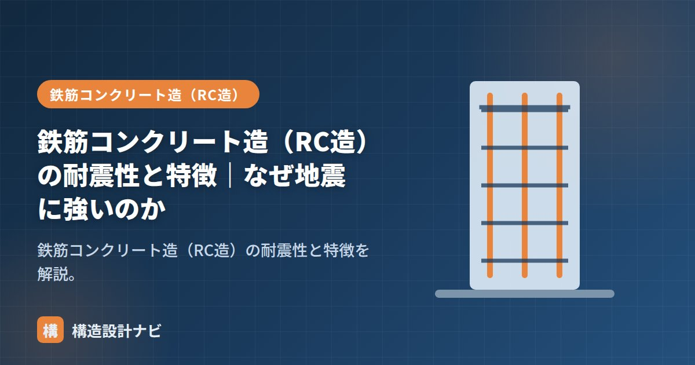

鉄筋コンクリート造（RC造）の耐震性と特徴｜なぜ地震に強いのか

鉄筋コンクリート造（RC造）は「地震に強い」と言われます。その理由は、硬さ（剛性）で揺れを抑え、鉄筋の粘りで耐えるという二段構えにあります。この記事ではRC造の耐震性の仕組みと特徴を整理します。
RC造の耐震性を支える2つの力
| 性質 | 役割 | 担い手 |
|---|---|---|
| 剛性（硬さ） | 地震時の変形（層間変形）を小さく抑える | コンクリート＋耐震壁 |
| じん性（粘り） | 大地震で大きく揺れても一気に壊れない | 鉄筋（適切な配筋） |
剛性が高いと建物が揺れにくく、内部の家具転倒や仕上げの損傷を抑えられます。一方、想定を超える大地震では、鉄筋が伸びて粘り強く変形しながらエネルギーを吸収し、倒壊を防ぎます。
耐震性を高める部材・配筋
- 耐震壁：地震力の大半を負担する硬い壁。量が多いほど揺れにくい（詳しく）。
- あばら筋（スターラップ）：梁に巻く補強筋。せん断破壊を防ぐ。
- 帯筋（フープ）：柱に巻く補強筋。柱のせん断破壊と主筋の座屈を防ぎ、粘りを生む。
- 主筋：曲げに抵抗する太い鉄筋。引張側に配置する。
RC造の耐震設計で重要なのは「粘り強い壊れ方」をさせることです。柱や梁が曲げで先に降伏すれば、変形して粘りながら耐えます。一方せん断破壊は前触れなく一気に崩れる危険な壊れ方。そのため、せん断耐力を曲げ耐力より高く保ち、「曲げ先行・せん断後行」となるよう、あばら筋・帯筋を十分に入れます。
RC造の特徴（耐震以外も含めて）
- 重い＝地震力が大きい：地震力は重量に比例するため、RC造は大きな地震力を受ける。それを高い耐力・剛性で受け止める設計思想。
- 揺れにくく静か：剛性・質量が大きく、振動・騒音が伝わりにくい。
- 火に強い：コンクリートが鉄筋を熱から守るため耐火被覆が不要。
- 耐久性が高い：適切なかぶり厚さ・ひび割れ対策で長寿命。
耐震・制震・免震との関係
RC造は「耐震構造（強さと粘りで耐える）」が基本ですが、超高層RCでは制震ダンパーを、病院・重要施設では免震を併用することもあります。RCの高い剛性は、免震・制震の効果を引き出す土台にもなります。
配筋検査では、あばら筋・帯筋の間隔が図面通りに入っているかを柱脚・梁端で重点的に見ます。この部分は地震時に最も塑性化しやすく、間隔が広がっているだけで粘り強い壊れ方が成立しなくなるため、検査の中でも特に気を抜けない箇所です。
仕組みは「コンクリートと鉄筋の関係」、弱点と対策は「コンクリートの弱点」、S造との違いは「RCとは・S造との違い」をどうぞ。
曲げ破壊とせん断破壊の違い（図解）
RC造の耐震設計で最も重要な考え方が「どう壊すか」です。同じ壊れるにしても、粘りながら壊れるのと、突然崩れるのとでは人命への影響がまったく違います。
設計では、せん断耐力を曲げ耐力より確実に大きくしておくことで、必ず曲げから先に壊れるようにします。これをせん断破壊先行の防止といい、あばら筋・帯筋を密に入れる理由がここにあります。過去の地震で、帯筋の間隔が広い旧基準の柱がせん断破壊して崩壊した事例が多数報告されており、この考え方が確立されました。
既存RC建物の耐震補強
旧基準（1981年以前）で建てられたRC建物は、耐震診断で耐力不足と判定されることがあります。補強の考え方は大きく3つに分かれます。
| 方針 | 代表的な工法 | 効果 |
|---|---|---|
| 強度を上げる | 耐震壁の増設、柱・梁の断面増打ち、鉄骨ブレースの設置 | 建物全体の耐力を底上げする。もっとも一般的 |
| 粘りを上げる | 柱への鋼板巻き・炭素繊維シート巻き | せん断破壊を防ぎ、粘り強い壊れ方に変える |
| 地震力を減らす | 免震レトロフィット、制震ダンパーの設置 | 建物に入る力自体を小さくする。使いながらの施工も可能 |
柱に鋼板や炭素繊維シートを巻く補強は、断面を大きくせずにじん性（粘り）だけを高められるのが利点です。とくに、窓の腰壁で柱の一部だけが拘束され、短くなった柱（短柱）はせん断破壊しやすいため、重点的な補強対象になります。校舎の窓下の腰壁で生じる短柱は、過去の地震で典型的な被害パターンとして知られています。
よくある質問
Q1. RC造は本当にS造より地震に強いのですか？
一概にどちらが強いとは言えません。RC造は剛性が高く揺れにくいため、地震時の変形が小さく内装や設備の損傷を抑えやすい特徴があります。一方でS造は軽く粘り強いため、地震力そのものが小さくなります。どちらも基準どおりに設計されていれば必要な耐震性能を満たします。重要なのは構造種別より、耐震壁のバランス配置や接合部の設計といった構造計画の質です。
Q2. マンションの壁式構造とラーメン構造では耐震性が違いますか？
考え方が異なります。壁式構造は耐震壁が多く剛性が非常に高いため、地震時の変形が小さく被害が出にくい傾向があり、5階建て程度までの中低層マンションで採用されます。ラーメン構造は柱と梁で支えるため間取りの自由度が高い反面、変形は壁式より大きくなります。いずれも基準を満たしていれば安全性は確保されています。
Q3. ひび割れがあるRC建物は危険ですか？
ひび割れの種類によります。乾燥収縮による細かいひび割れは、構造耐力に直接影響しないことがほとんどです。注意が必要なのは、柱・梁に生じた斜め方向のひび割れで、これはせん断力によるもので構造的な問題を示している可能性があります。また、幅0.3mmを超えるひび割れは、雨水の浸入で内部の鉄筋が錆びる原因になるため、補修が推奨されます。判断に迷う場合は専門家による調査が必要です。
まとめ
- RC造の耐震性は「剛性で揺れを抑え、鉄筋の粘りで耐える」二段構え。
- 耐震壁・あばら筋・帯筋で、せん断破壊を防ぎ「曲げ先行」の粘り強い壊れ方にする。
- 重いぶん地震力は大きいが、高い耐力・剛性・耐火・耐久で受け止める。